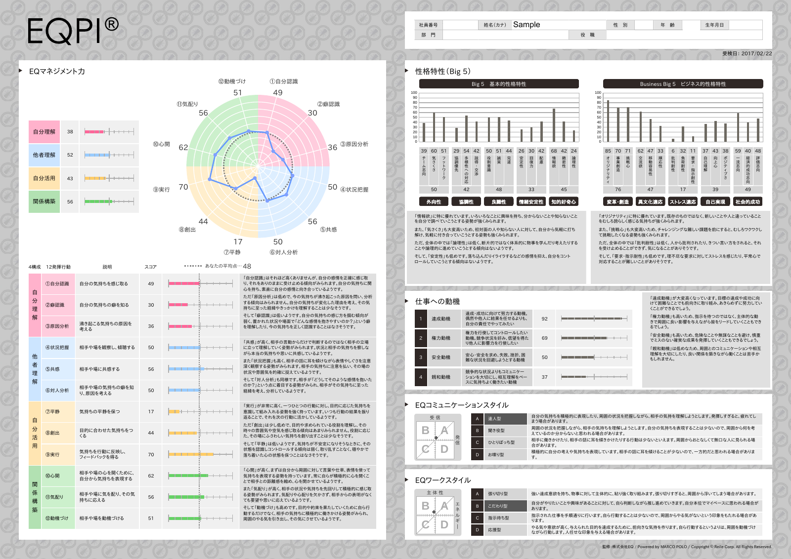

EQを活用した人材育成
EQ DEVELOPMENT
EQ DEVELOPMENT
自分と相手を知り、次の成長へ。
自分と相手を理解することから、コミュニケーションとリーダーシップを見つめ直す。

EQとパーソナルインテリジェンス
EQ（感情知能）は、自分や他者の感情を理解し、適切に活用・マネジメントする力です。
パーソナルインテリジェンスは、自分や他者の性格・思考・行動特性を理解し、その違いをより良い人間関係や成果につなげる力です。
EQPIとは
EQPIは、EQとパーソナルインテリジェンスを測定し、自分自身の強みや成長のポイントを理解するためのアセスメントです。2つの視点から自己理解を深め、今後の成長やコミュニケーション、リーダーシップの向上に役立てます。
- 自己理解・成長、キャリア形成
- コミュニケーションの改善、チームビルディング
- リーダーシップの向上
- 研修・コーチング・1on1面談での活用
結果レポートの見方
サンプルには、EQマネジメント力の4構成・12発揮行動、性格特性、仕事への動機、EQコミュニケーションスタイル、EQワークスタイルが示されています。
結果は個人の能力を決めつけるものではありません。現在の傾向を知り、今後の成長につなげる参考資料として活用します。

受検について
- 所要時間
- 約20〜35分
- 受検環境
- インターネットに接続したパソコン・タブレット・スマートフォン
- 回答のポイント
- 普段の自分に最も近い回答を、第一印象でお選びください。正解・不正解はありません。他人と相談せず、一人で回答してください。
静かな環境で時間に余裕を持ち、すべての設問に回答してください。途中で中断すると保存されない場合があるため、できるだけ続けて受検してください。
学び・実践につなげる
EQセルフサイエンス、EQリーダーシップ、EQ研修などの学びと組み合わせ、自己理解を現場での行動につなげます。
研修・講座を見る →CONTACT
人と組織の課題をともに考えます。
現場で感じている課題に合わせて支援の進め方をご相談いただけます。